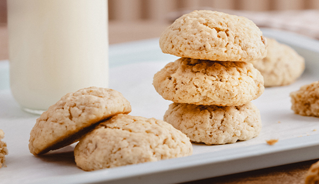

Galletas de avena

Las galletas de avena son una de las recetas más sencillas y populares de la repostería casera. Su preparación requiere pocos ingredientes y ofrece una gran variedad de posibilidades, ya que pueden incorporarse frutos secos, chocolate o frutas deshidratadas. Gracias a la avena, estas galletas poseen una textura inconfundible y un sabor suave que las convierte en una excelente opción para cualquier momento del día.